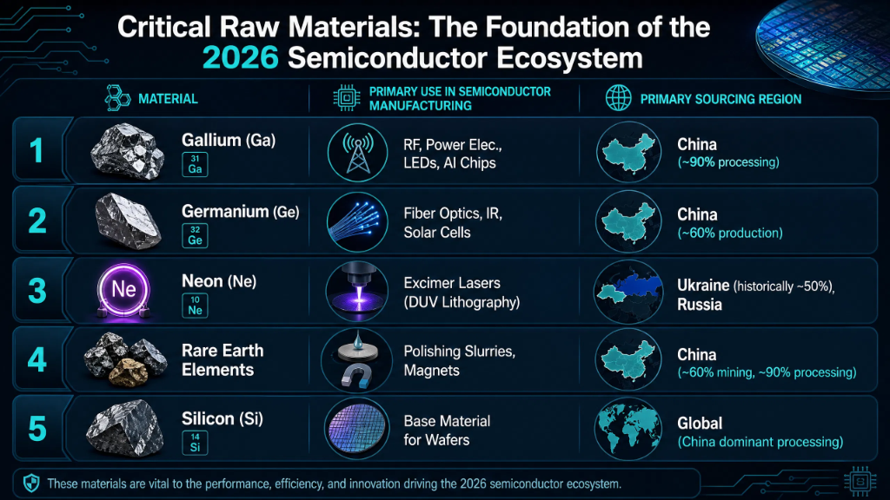

The 2026 Semiconductor Ecosystem
A Comprehensive Analysis of Sourcing Strategies, Supply Chain Architecture, and Global End-User Industries
Executive Summary: The Procurement Paradox
- Record-High Valuations: Growth is driven by explosive global demand for AI systems and electric vehicle power logic.
- Systemic Fragility & Node Allocation: Leading-edge fabrication is a massive chokepoint where global availability of advanced computing rests entirely on sub-3nm allocations. The concentration of Extreme Ultraviolet (EUV) lithography capacity leaves the industry vulnerable to minor material delays.
- Strategic Pivot: Sourcing HBM (High Bandwidth Memory) and advanced logic requires a shift from transactional purchasing to capacity reservation models.
Evolution of Procurement: The Strategic Hybrid Model
Lean JIT (Commoditized Nodes)
Used for standardized legacy passive elements and commoditized logic chips. Minimizes capital lock-up and inventory holding costs. However, global supply shocks exposed severe operational risks in pure JIT models, including zero safety buffers, sudden factory halts, supplier insolvency, and shipping delays.
Strategic Buffers (Critical Nodes)
Maintaining 3 to 6 months of safety stock for sole-sourced, high-margin microcomponents (HBM, custom GPUs) to guarantee manufacturing continuity.
Strategic Takeaway: The hybrid sourcing approach secures mission-critical silicon layers while utilizing JIT dynamics where suppliers are abundant.
Key Procurement Challenges & Strategic Sourcing
- Category Management Sourcing: Slicing procurement into precise technology nodes (Leading-edge sub-7nm vs Legacy nodes).
- Leading-edge Sourcing: Focuses on deep co-development partnerships, engineering collaboration, and long-term volume commitments.
- Legacy Sourcing: Emphasizes multi-sourcing, second-sourcing qualification, and legacy lifecycle management to offset obsolescence.
Digitalization & Resilience in Procurement
LTA & Reservation Fees
Securing fab slots requires upfront reservation fees and take-or-pay clauses in Long-Term Agreements (LTAs).
Friend-Shoring Sourcing
Decoupling supply links from high-risk locations, redirecting procurement to allied geopolitical nodes.
The Global Supply Chain of Semiconductors
An analysis of geographic concentrations, fabrication bottlenecks, and circular supply-chain resilience models.
The Global Supply Chain: A Web of Complexity
Click a node on the map
Select one of the highlighted regions on the supply chain map to view its core role and contribution to the global semiconductor flow.
Architecture of the Global Value Chain (GVC)
- Design & EDA (United States): Dominance in core processor blueprints and layout compiler systems (NVIDIA, Apple, Qualcomm).
- SME Equipment (Europe): Monopoly on Extreme Ultraviolet tools (ASML) required to etch sub-7nm circuit nodes.
- Wafer Fabrication (East Asia): TSMC (Taiwan) and Samsung (Korea) form the production base for global advanced nodes.
Market Leader: U.S. design firms capture the majority of global chip value, controlling 80%+ of the Electronic Design Automation (EDA) software market and holding core IP for high-end CPU/GPU microarchitectures.
Critical Enabler: European-based ASML holds a 100% EUV (Extreme Ultraviolet) Monopsony for high-end printing scanners, making it the sole hardware gatekeeper for sub-7nm node fabrication.
Front-End & Back-End Bottlenecks
Front-End: Node Scaling
The race for the 2nm and 1.4nm nodes continues to demand immense capital investments for wafer fabrication lines.
Back-End: CoWoS & HBM Integration
Stacking logic dies and High Bandwidth Memory (HBM) via Chip-on-Wafer-on-Substrate (CoWoS) formats has surpassed wafer printing as the primary supply chain bottleneck.
SME, Materials & Geopolitical Fragmentation
- The US CHIPS Act ($52B): Funding the domestic establishment of advanced logic fabs to balance East Asian concentration.
- Europe & China Reshoring: Multi-billion dollar state-supported programs targeting semiconductor in-sourcing.
- Material Chokepoints: Strict export controls placed on critical trace materials like Gallium and Germanium.
China controls 90%+ of Gallium and 60%+ of Germanium sourcing. Recent export restrictions require explicit licenses, causing price volatility and sourcing delays for next-generation power electronics and optical systems.
Supply Chain Resilience: Digital & Circular
Deep Supply Mapping
Leading manufacturers utilize digital mapping tools to trace supply down to Tier-4 and Tier-5 chemical suppliers.
Circular Mineral Reclamation
Transitioning to industrial e-waste harvesting to extract high-purity minerals. Recovering up to 99% of Copper, 98% of Gold, and 95% of Silicon substrates from decommissioned hardware to buffer raw mining volatility.
Downstream End-User Industries & Applications
An overview of structural demand changes, AI intelligence engines, automotive integration, and edge computing.
The Ubiquity of Silicon: Powering the Modern World
- Central Nerve System: Microchips control the storage, routing, and processing of every piece of data globally.
- Silicon Intensity Metric: The total value of silicon content per product is the primary metric of industrial scaling.
- Ubiquitous Integration: Foundational logic layers power smart municipal grids, medical machinery, and neural processors.
Defined as the total monetary value of silicon content embedded per finished product unit. This index is the primary metric tracking how deeply semiconductors add value to downstream hardware.
Executive Summary: The Demand Landscape in 2026
| Industry Segment | Growth Speed & Status | Sourcing & Technology Focus |
|---|---|---|
| AI Datacenters | 50% CAGR (Exponential Value Growth) | GPUs, HBM (High Bandwidth Memory), advanced optical links, sub-3nm allocations. |
| Automotive | Fastest Volume Growth (High Intensity scaling) | ADAS logic, Lidar, Silicon Carbide (SiC) power logic, 28nm+ legacy microcontrollers. |
| Smartphones & PCs | Volume Saturation (Flat/Steady volume growth) | Edge-AI acceleration NPUs, standard application processors, memory, sensor logic. |
AI & Data Centers: The Generative Revolution
- Accelerator Market ($500B+): Generative models and neural computing demand massive scaling of TPU and GPU nodes.
- Sub-3nm Node Sourcing: The primary consumers of the most advanced wafer print architectures globally.
- Memory & Interconnect: Demands extreme density of High Bandwidth Memory (HBM) and customized routing interconnect silicon.
Automotive: The "Smartphone on Wheels"
- Silicon Carbide (SiC) Power: Drives high-efficiency power switches in high-voltage EV battery platforms.
- ADAS Autonomous Compute: Self-driving capabilities demand heavy on-board computational units for sensor fusion.
- Sensor Arrays Sourcing: Vehicles integrate multiple LiDAR, radar, and camera chip sets for 360-degree coverage.
Industrial, IoT & Healthcare: Intelligence at the Edge
Industry 4.0 Edge Analytics
Factory floor nodes execute real-time local algorithms for predictive maintenance and machine vision controls.
Healthcare Personalized Sourcing
Semiconductors enable smart wearable diagnostics, active health implants, and personalized diagnostics.
Consumer Electronics & Emerging Frontiers
- On-Device NPU Logic: Integrating Neural Processing Units (NPUs) into laptops and mobile phones to enable local AI execution.
- Neuromorphic Computing: Researching brain-inspired architectures targeting extreme computing power efficiency.
- Next-Gen Frontiers: Developing quantum structures and 6G communications hardware blocks.
Conclusion: A Silicon-Dependent Civilization
Mastery of the semiconductor ecosystem is mastery of the future. The "Chip Wars" aren't just about manufacturing; they are about who can best harness silicon to transform their industries.
Procurement
Shift from JIT to Strategic Hybrid; resilience is the new ROI.
Supply Chain
Chokepoints in Advanced Packaging and SME are the new strategic risks.
Downstream End-User Industries
AI is the Value King; Automotive is the Volume King.

Thank You
Mastery of the semiconductor ecosystem is mastery of the future.